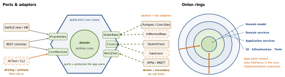

design · folio
In one line: Put the domain in the middle and make everything else — UI, HTTP, database, clock, push — a replaceable adapter plugged into a port the application defines. Hexagonal (Cockburn 2005), Onion (Palermo 2008) and Clean (Martin 2012) are one dependency rule in three vocabularies: source dependencies point inward. A modular monolith applies the same boundaries between modules in one deployable, before (or instead of) paying for microservices.
Download PDF Print view LaTeX source


How it works
- Port = an interface at the application boundary, named in domain terms (
OrderRepository, notPostgresDAO). Adapter = code that converts between a technology and a port. - Driving (primary) ports — what the app offers: use-case interfaces called by UI, HTTP, CLI, tests. Driven (secondary) ports — what the app needs: persistence, messaging, time, payments. The app declares them; infrastructure implements them (DIP).
- Cockburn’s goal: the app can be driven equally by users, programs, automated tests or batch scripts, and developed/tested in isolation from its devices and databases. Six sides mean nothing — just room to draw ports.
- Onion — concentric rings; the core has no outward deps; Palermo stresses that infrastructure is outer, not the bottom layer (a classic 3-tier stack has UI → BLL → DAL, so the domain depends on the DB).
- Relation: same rule, different emphasis — hexagonal: inside vs outside + symmetric left/right; onion: rings inside the core; Clean: named rings + the Dependency Rule (see coordinator-repository-di-clean).
- Testability payoff: the domain + use cases run in unit tests with an
InMemoryRepoand aFakeClock— no simulator, DB or network; same use case, adapter swapped at the composition root.
Example — a use case with two driven ports
protocol DeviceRepository { func all() async throws -> [Device] }
protocol Clock { func now() -> Date } // driven ports
struct ListStaleDevices { // driving port
let repo: DeviceRepository; let clock: Clock
func callAsFunction() async throws -> [Device] {
let now = clock.now()
return try await repo.all().filter {
now.timeIntervalSince($0.lastSeen) > 900 } } }
// adapters live in OTHER modules:
struct APIDeviceRepository: DeviceRepository { /* URLSession */ }
struct FakeClock: Clock { var t: Date; func now() -> Date { t } }On iOS
Feature SPM packages expose a small public API (driving port) and declare what they need as protocols (driven ports: DeviceRepository, Analytics, Clock); a Networking package adapts URLSession to them; the app target is the composition root wiring adapters in. The app is a modular monolith: one binary, compiler-enforced boundaries (internal vs public). See modularization-spm.
Modular monolith vs microservices
| Modular monolith | Microservices | |
|---|---|---|
| deploy | one unit, one version | independent per service |
| boundary | module API, enforced by build/lint | network API — hard, can’t cheat |
| calls | in-process, typed, free | network: latency, partial failure |
| data | one DB, schema per module | DB per service |
| consistency | local ACID transactions | sagas + outbox; eventual |
| ops | one pipeline, one log | tracing, discovery, versioning |
| scales | whole app | per service, per team |
When to split a module out: it needs independent deploy cadence (a team blocked by others’ releases), different scaling or runtime, fault isolation, or a hard security boundary. Not because “it’s cleaner” — a bad boundary across a network is a distributed monolith. Fowler’s MonolithFirst: find the boundaries in-process, then extract. Modules talk via public APIs or in-process events, never another module’s tables.
Traps
- “Hexagonal = six layers” — no; two sides (driving/driven), N ports.
- The port belongs to the app, not to the adapter; an interface generated from the DB or SDK is not a port.
- A port per class “for testability” is ceremony; ports go at I/O boundaries. A CRUD screen needs no hexagon.
- Microservices don’t fix a tangled model — they distribute it.